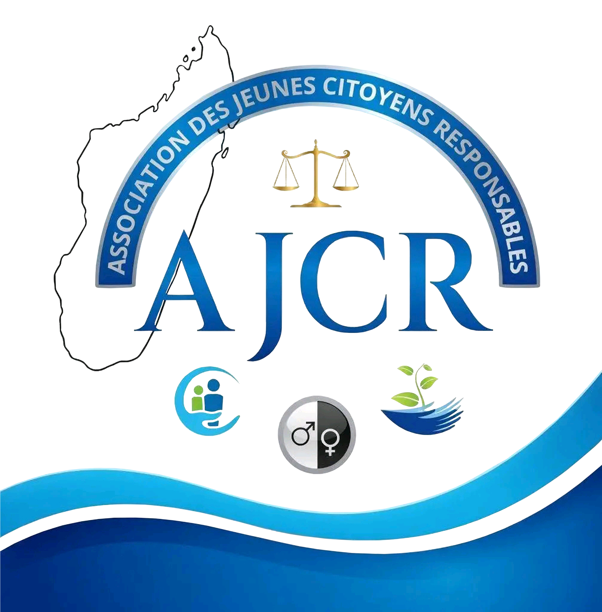
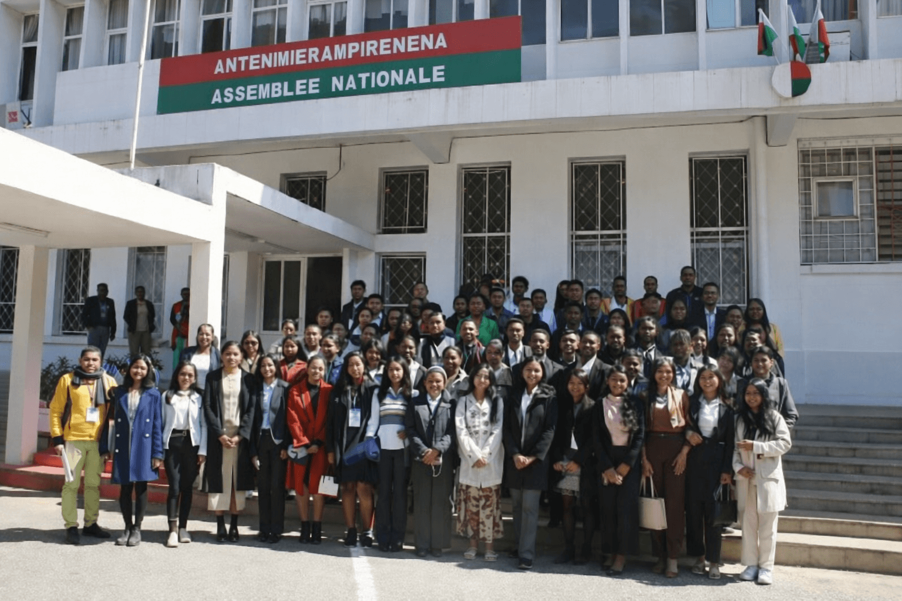
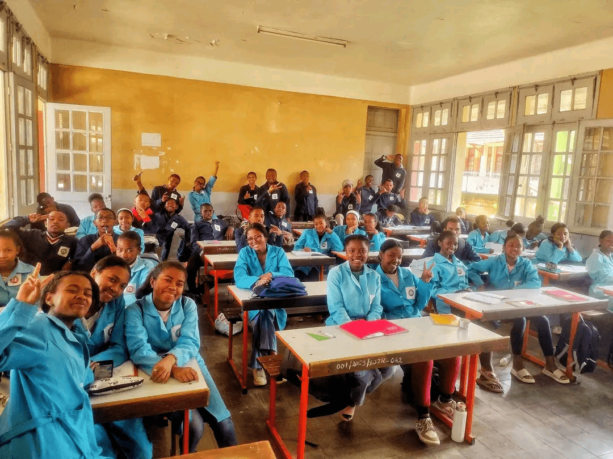
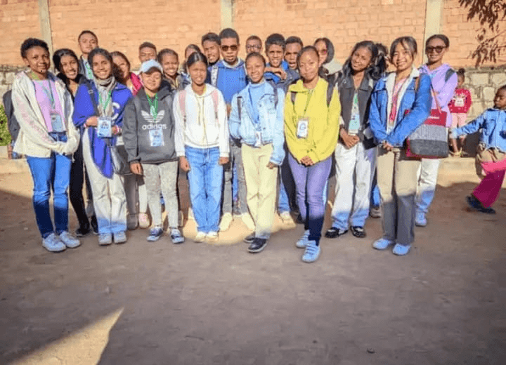
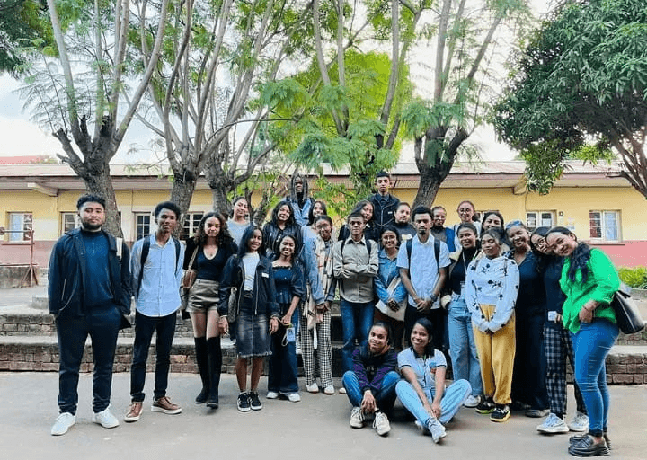
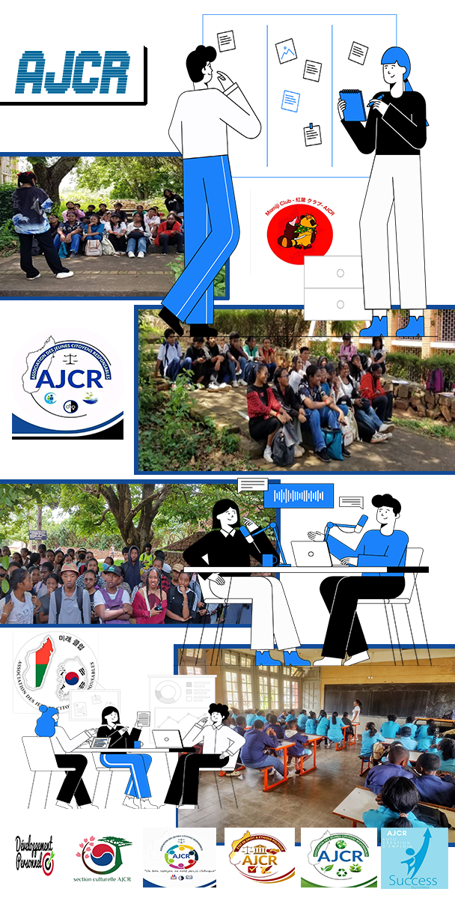

Notre adresse
LOT IAV 318
Iavoloha
Des jeunes unis par la conviction que chacun peut agir, s'engager et faire avancer Madagascar vers un avenir plus responsable et durable.

Découvrez notre identité et nos valeurs, et pourquoi nous agissons ensemble
pour
un Madagascar durable.
est une organisation malgache apolitique et à but non lucratif qui oeuvre pour former des jeunes engagés, responsables et conscients de leur rôle dans la société.
Elle encourage l'implication citoyenne et accompagne les jeunes dans leur développement, à travers des actions concrètes visant à créer un impact positif et durable au sein de la communauté.

Nous sommes l'AJCR, une association malgache à but non lucratif qui encourage l'engagement citoyen et le bénévolat.
En savoir plusEncourager des jeunes solidaires et engagés à agir concrètement pour améliorer et transformer leur communauté.
En savoir plusL'AJCR est guidée par des valeurs de civisme, d'éthique, de développement et d'inclusion. Ces principe orientent toutes nos actions.
En savoir plusInspirer et former des jeunes citoyens engagés, responsables et solidaires pour transformer positivement leur environnement
En savoir plusL'AJCR repose sur une organisation institutionnelle claire et rigoureuse :
Organe souverain de décision
Organe d'orientation stratégique
Organe de gestion opérationnelle
Moteur d'impulsion des projets
Nous agissons avec responsabilité citoyenne pour contribuer activement au développement de notre société
Au coeur de notre engagement, le programme " Jeune Citoyen(ne) d'Impact" vise à former une génération consciente, engagée et proactive. à travers des ateliers, formations et Projets phares régionaux, nous aidons les jeunes à développer leurs talents, leur leadership et leur sens du civisme.
Notre objectifs : transformer les passions en actions concrètes pour un changement durable à Madagascar.

L'Association des Jeunes Citoyens Responsables promeut le civisme, le leadershipet l'éthique politique.
Nous organisons des espaces d'échanges, de sensibilisations et de réflexion autour de la transparence, de l'État de droit et de la responsabilité citoyenne. Parce que le changement commence par l'esprit, nous encourageons une révolution pacifique fomdée sur les valeurs, l'intégrité et l'amour du pays.

Nous agissons pour un environnement sain et une société unie. Nos initiatives incluent des actions écologiques, des projets solidaires et des activités valorisant la diversité culturelle.
À travers nos antennes régionales (Antananarivo et les provences), nous construisons un réseau de jeunes citoyens responsables, capables d'impacter positivement leurs communautés.

Nous agissons à travers plusieurs axes stratégiques pour former des jeunes engagés, responsables et acteurs du changement. Chaque domaine reflète notre volonté d'avoir un impact concret et durable dans la société.
Nous aidons les jeunes à révéler leur potentiel à travers le développement de leurs compétences, leur confiance et leur esprit eutrepreneurial.
Nous formons des citoyens conscients, engagés et capables de contribuer activement au développement de leur communauté.
Nous promouvons les valeurs d'intégrité, de justice et de responsabilité pour une gouvernance saine et équitable.

Nous sensibilisons et agissons pour la protection de l'environnement et la promotion de pratique durables.
Nous valorisons la diversité culturelle et encourageons le vivre-ensemble dans le respect et la solidarité.
Nous accompagnons les jeunes dans la création d'activités génératrices de revenus à travers l'entrepreneuriat, afin de renforcer leur autonomie économique et leur insertion professionnelle.
Chaque section joue un rôle essentiel dans la mise en oeuvre de notre vision et de nos engagements.
Voir les sections


Découvrez les voix des responsables qui portent la vision, structurent nos actions et
guident le développement de notre association.

A travers l'AJCR, j'ai eu des expériences que mille livres de leadership ne m'aurait pas donné en un an. Ces expériences vécues avec tous mes compagnons d'engagement m'ont forgé et m'ont poussé à plus acter pour que tout le monde puisse sourire dans un monde ou le combat doit être mené dans la fratérnité. Cette année au sein de l'association m'a fait comprendre : l'humanité, l'humilité, la persévérance, l'indépendance émotionnelle et surtout l'amour et la foi. Que Dieu fasse que tout le monde soit toujours responsable selon les passions et les charismes, et que la grande famille de l'AJCR qui est en train de grandir apporte un changement palpable pour 2026, et au-delà. Qu'avec notre responsablilité, partout, nous apportons le changement et le sourire. ...Voir plus

L'AJCR m'a appris un chose essentielle: on ne devient pas leader quand tout est facile, mais quand on choisit de tenir malgré les difficultés. Quand j'ai commencé comme responsable de section, je doutais. J'apprenais. Je me trompais parfois. Mais je continuais, parce que je croyais profondément au potentiel des jeunes et à leur capacité à se construire par l'action. En devenant coordonnateur général, la responsabilité a pris une autre dimension. Il ne s'agissait plus seulement d'organiser ou de décider, mais de porter une vision commune, d'assumer les choix et d'avancer même dans le silence, même dans l'incertitude. L'AJCR ne m'a pas simplement fait grandir. Elle m'a appris à rester droit, lucide et engagé, même quand le chemin est exigeant. Et la leçon que je retiens aujourd'hui est claire: quand on responsabilise les jeunes, ils ne subissent plus l'avenir... ils le construisent. ...Voir plus

Et oui, c'est vraiment une association des jeunes responsables parce que c'est la toute première fois dans ma vie que j'ai effectué des dons, des sensibilisations, etc..., et tout ça grâce à L'AJCR. Je suis tellement sûre que je ne ferai jamais des sensibilisations dans les sociétés si j'étais pas dans une association comme celle-ci. Pendant une année de travail, l'association m'a permis de prendre des responsabilités pour le bien de tous mais surtout pour moi dans ma futur vie professionnelle. A travers notre association bien aimée, on a pu visité le tribunal de Première instance, l'Assemblée Nationale pour nous informer le fonctionnement de ces institutions, des écoles primaires publliques et des lycées,... pour nous donner l'occasion de parler et de donner des conseils aux jeunes étudiants. Cette année avec l'AJCR était vraiment enrichissante. Ce n'était pas du tout un regret de l'avoir choisie comme association non seulement pour l'acquisition de l'UE libre mais pour l'avenir de chacun à devenir responsable dans son entourrage. Milles mercis à tous les comités exécutifs, les bureaux et surtout les membres actifs de L'AJCR. ...Voir plus
Membres
Responsables
Bénévoles / staff
Projets
Nos engagements traduisent notre volonté d'agir avec responsabilité, éthique et
transparence au service de l'intérêt collectif.
Nous nous engageons à révéler le potentiel latent de chaque jeune en transformant ses talents, passions et compétences en véritables leviers d'engagement citoyen.
Lire la suiteNous croyons qu'un pays se transforme lorsque ces citoyens décident d'agir avec responsabilité.
Lire la suiteFidèle à ses statuts, l'AJCR est indépendante de toute affiliation politique ou confessionnelle. Nous faisons de l'éthique une éxigence et non une option.
Lire la suiteNous considérons que le développement ne peut être durable sans respect de l'environnement et ouverture à la diversité culturelle.
Lire la suiteParticipez, proposez ou soutenez nos actions pour construire une communauté responsable et engagée.
Rejoignez nos actions concrètes sur le terrain! Participez aux ateliers, projets communautaires, programmes éducatifs et événements organisés par l'AJCR pour avoir un impact réel dans votre communauté. Chaque engagement fait la différence.
Participer maintenant :
inscrivez-vous
aux activités via notre formulaire
en ligne ou Rejoignez-nous directement lors de nos événements.
Vous avez une idée ou un projet qui peut améliorer votre environnement ou celui de vos pairs? L'AJCR encourage les jeunes à soumettre leurs initiatives pour les transformer en actions concrètes. Votre créativité et votre engagement peuvent inspirer toute la communauté.
Proposez un projet :
Proposez votre
projet en remplissant notre
formulaire d'initiative et collaborons ensemble pour le réaliser.
Entreprises, associations ou institutions, vous pouvez soutenir notre mission en devenant partenaire de L'AJCR. Votre appui financier, matériel ou logistique contribue à amplifier nos projets et à former des jeunes citoyens responsables et engagés.
Collaborer avec nous :
Contactez notre
équipe partenariat pour
discuter des possibilités de collaboration et de soutien.
La FAQ rassemble les questions que nous recevons le plus souvent. C'est un guide pratique pour vous aider à trouver facilement les informations dont vous avez besoin.
Pour devenir membre, il vous suffit de remplir notre formulaire d'inscription en ligne et de suivre les instructions. Une fois validé, vous recevrez un email de confirmation.
Oui! Nous accueillons volontiers les bénévoles. Vous pouvez vous inscrire via notre page "Participer aux activités" et nous indiquer vos disponibilités et compétences.
Vous pouvez nous contacter via notre formulaire de contact sur la page "Écrivez-nous" ou par email à "ajcrmadagascar@gmail.com"
Vous pouvez soutenir L'AJCR en faisant un don financier ou matériel pour cela : contactez directement le siège de l'association au 038 13 268 96 ou via l'adresse e-mail officielle "ajcrmadagascar@gmail.com". 1-Indiquez le type de don que vous souhaitez faire (financier, matériel ou autre ) et vos coordonnées. 2-Le Bureau Exécutif vous guidera sur les modalités de transfert ou de remise du don. tous les dons sont utilisés exclusivement pour soutenir les projets et activités de l'AJCR conformément à ses statuts et à sa politique de transparence
Pour ne rien manquer des activités et évenements de l'AJCR, vous pouvez : Suivre nos réseaux sociaux officiels où nous publions les actualités et les invitations aux événements. Ainsi, vous serez toujours au courant des activités, ateliers, etc...
Pour devenir partenaire ou sponsor de l'AJCR, consultez notre section avec l'AJCR vous y trouverez le formulaire de contact "Devenir partenaire" pour collaborer avec nous.
Accédez aux statuts, au règlement intérieur et aux documents importants qui encadrent les activités et les valeurs de notre association.
Pour toute demande d'information, de collaboration ou d'engagement, veuillez
nous
contacter via les coordonnées ci-dessous
Nous sommes à votre disposition pour toute information complémentaire ou demande de collaboration.
LOT IAV 318
Iavoloha
+261 38 13 268 96
ajcrmadagascar@gmail.com
Notre équipe est à votre écoute pour répondre à vos questions et échanger avec vous.